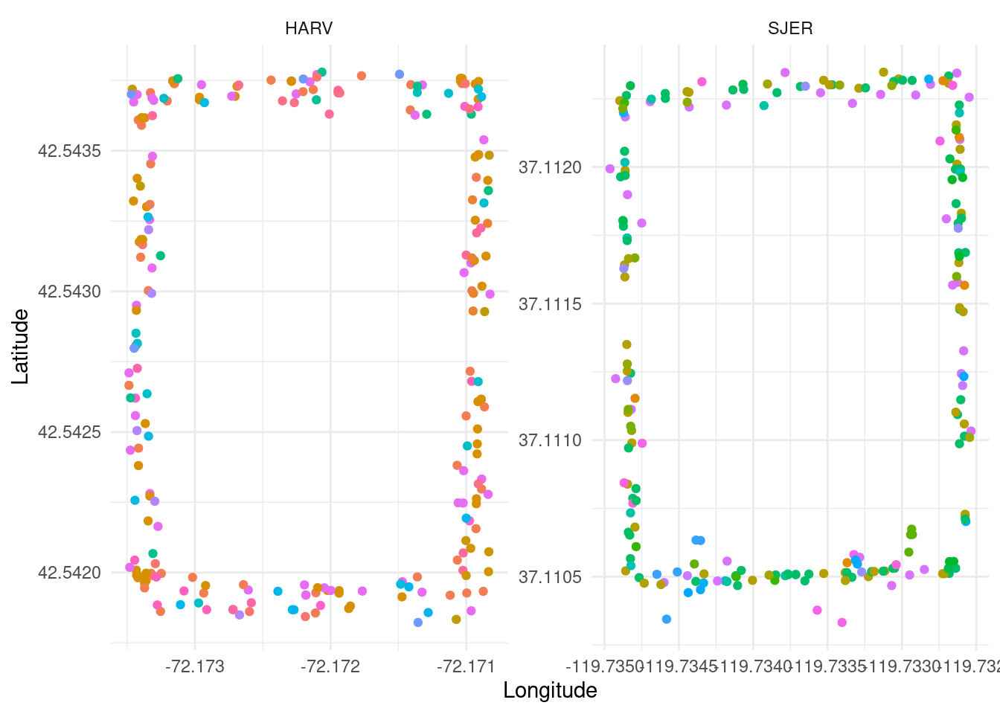
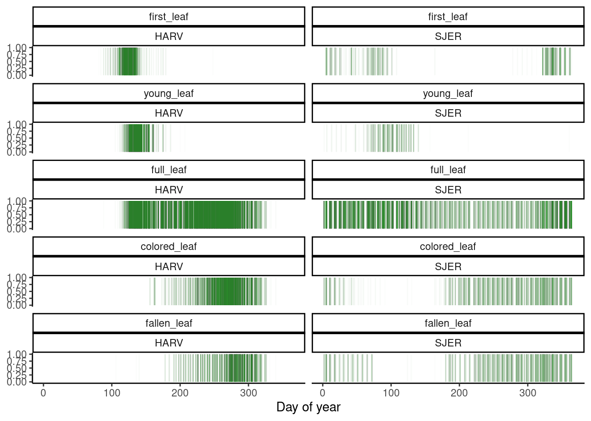
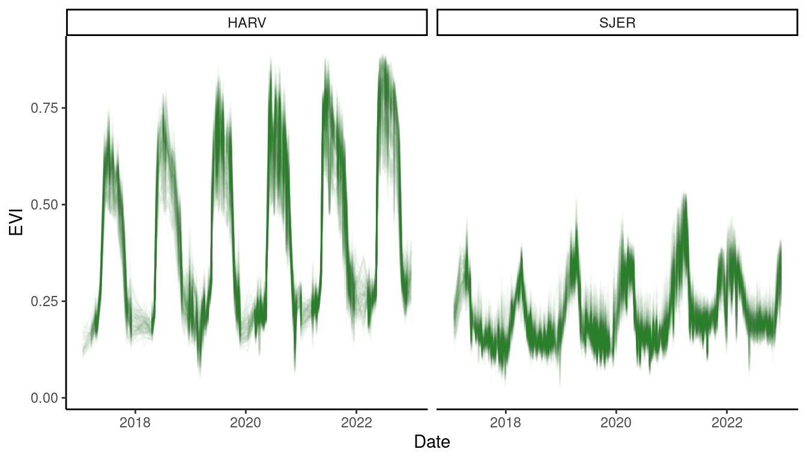
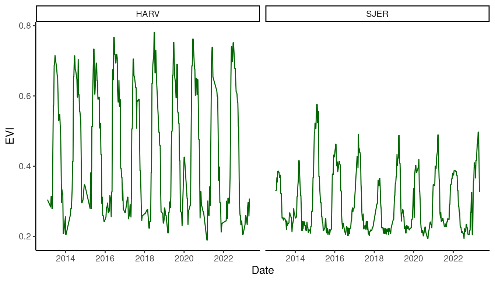
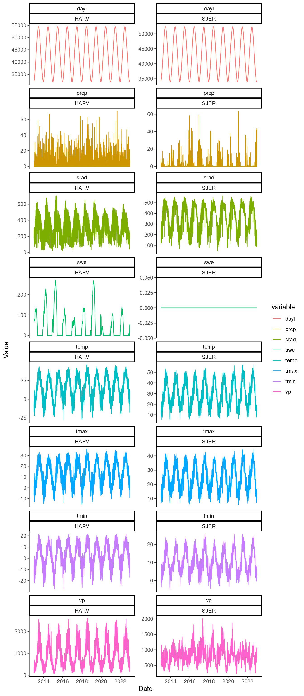

Data prepared for Dr. Yang Chen’s class STATS605 in 2023 Fall, also good for others interested in exploring phenology data.
Data files and code for generating them can be found in this GitHub repo.
This blog gives some first steps reading and visualizing the data.
Meta data for trees
metadata <- read_csv("data/metadata.csv")
metadata %>%
head() %>%
flextable::regulartable() %>%
flextable::autofit() %>%
flextable::fit_to_width(8)site | site_lat | site_lon | id | lat | lon | species | growth_form |
|---|---|---|---|---|---|---|---|
HARV | 42.54278 | -72.17213 | NEON.PLA.D01.HARV.06016 | 42.54368 | -72.17330 | Quercus rubra L. | Deciduous broadleaf |
HARV | 42.54278 | -72.17213 | NEON.PLA.D01.HARV.06046 | 42.54186 | -72.17096 | Quercus rubra L. | Deciduous broadleaf |
HARV | 42.54278 | -72.17213 | NEON.PLA.D01.HARV.06034 | 42.54310 | -72.17097 | Quercus rubra L. | Deciduous broadleaf |
HARV | 42.54278 | -72.17213 | NEON.PLA.D01.HARV.06041 | 42.54225 | -72.17102 | Quercus rubra L. | Deciduous broadleaf |
HARV | 42.54278 | -72.17213 | NEON.PLA.D01.HARV.06039 | 42.54233 | -72.17089 | Quercus rubra L. | Deciduous broadleaf |
HARV | 42.54278 | -72.17213 | NEON.PLA.D01.HARV.06029 | 42.54373 | -72.17132 | Quercus rubra L. | Deciduous broadleaf |
metadata %>%
ggplot() +
geom_point(aes(x = lon, y = lat, col = species)) +
facet_wrap(. ~ site, scales = "free") +
theme_minimal() +
theme(legend.position = "bottom") +
guides(col = "none") +
labs(
x = "Longitude",
y = "Latitude"
)
Discrete phenology data.
rnpn::npn_pheno_classes() %>%
filter(id %in% 1:5) %>%
select(id, name, description) %>%
flextable::regulartable() %>%
flextable::autofit() %>%
flextable::fit_to_width(8)id | name | description |
|---|---|---|
1 | Initial shoot or leaf growth | Initiation of seasonal vegetative growth |
2 | Young leaves or needles | Presence of foliage still in process of maturing |
3 | Leaves or needles | Presence of live foliage |
4 | Colored leaves or needles | Senescent coloring of foliage |
5 | Falling leaves or needles | Dropping of foliage |
dat_discrete <- read_csv("data/discrete.csv")
dat_discrete %>%
filter(status == "yes") %>%
mutate(doy = date %>% lubridate::mdy() %>% lubridate::yday()) %>%
arrange(phenophase_code) %>%
mutate(phenophase = factor(phenophase, levels = unique(phenophase))) %>%
ggplot() +
geom_segment(aes(x = doy, xend = doy, y = 0, yend = 1), alpha = 0.01, col = "dark green") +
facet_wrap(. ~ phenophase * site, ncol = 2) +
theme_classic() +
labs(
x = "Day of year",
y = ""
) +
theme(axis.title.y = element_blank())
dat_discrete <- read_csv("data/discrete.csv")
dat_discrete %>%
filter(!is.na(intensity)) %>%
mutate(doy = date %>% lubridate::mdy() %>% lubridate::yday()) %>%
arrange(phenophase_code) %>%
mutate(phenophase = factor(phenophase, levels = unique(phenophase))) %>%
arrange(intensity_code) %>%
mutate(intensity = factor(intensity, levels = unique(intensity))) %>%
ggplot() +
geom_point(aes(x = doy, y = intensity), alpha = 0.01, col = "dark green") +
facet_wrap(. ~ phenophase * site, ncol = 2) +
theme_classic() +
labs(
x = "Day of year",
y = "Intensity"
)
Continuous phenology data
dat_continuous_3m <- read_csv("data/continuous_3m.csv")
dat_continuous_3m %>%
ggplot() +
geom_line(aes(x = date, y = evi, group = id), alpha = 0.01, col = "dark green") +
facet_wrap(. ~ site) +
theme_classic() +
labs(
x = "Date",
y = "EVI"
)
dat_continuous_500m <- read_csv("data/continuous_500m.csv")
dat_continuous_500m %>%
ggplot() +
geom_line(aes(x = date, y = evi), col = "dark green") +
facet_wrap(. ~ site) +
theme_classic() +
labs(
x = "Date",
y = "EVI"
)
Weather data
dat_weather <- read_csv("data/weather.csv")
dat_weather %>%
gather(key = "variable", value = "value", -site, -date) %>%
ggplot() +
geom_line(aes(x = date, y = value, col = variable)) +
facet_wrap(. ~ variable * site, scales = "free_y", ncol = 2) +
theme_classic() +
labs(
x = "Date",
y = "Value"
)